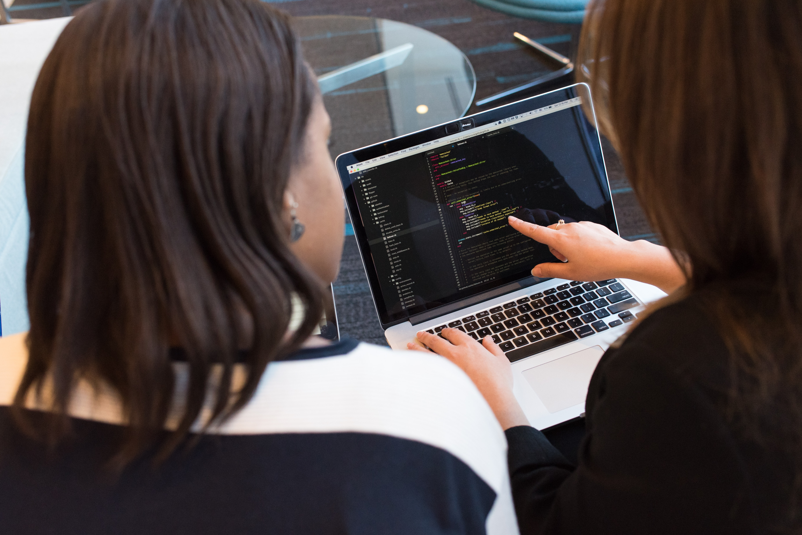

Code Review
Before deploying code, developers typically conduct a thorough review process to ensure the quality and functionality of the code. This review process often involves multiple developers and may include the use of code review tools or software.

Collaberations
Collaboration is a critical aspect of software development, and developers often work closely with other members of the development team, including project managers, designers, quality assurance professionals, and other developers.
One of the key benefits of collaboration is that it enables developers to share their knowledge and expertise, helping to identify and resolve issues more quickly and efficiently. By working together, developers can leverage each other's strengths and skills, resulting in a better overall product.

Communication, in Layman's
When working on software projects, we often collaborate with clients, project managers, and other stakeholders who may not have a technical background. It is important to be able to explain technical concepts and processes in a way that is easy to understand, so that everyone involved can have a clear understanding of the project's objectives and progress.
To communicate in layman's terms, we use analogies, metaphors, and other techniques to help explain technical concepts in a more relatable way. We also avoid using technical jargon or acronyms that may be unfamiliar to non-technical stakeholders.

Detail Oriented
Attention to detail is a critical skill for developers, as it enables them to identify and resolve issues that may affect the quality or functionality of their software solutions. This attention to detail involves the ability to examine code line by line, looking for syntax errors, bugs, and other potential issues that may affect the performance of the software.
Developers must also be able to anticipate potential issues that may arise during the development process, and take steps to address them proactively. This may involve creating detailed project plans, establishing coding standards and best practices, and conducting thorough testing and quality assurance processes to ensure that the software meets the needs of users and clients.

Responsiveness
Responsiveness is a critical aspect of software development, as it can directly impact the user experience and the success of the software solution. Responsiveness refers to the ability of the software to quickly and efficiently respond to user inputs, requests, and actions.
A responsive software solution is one that is designed to be fast, efficient, and user-friendly. It should load quickly, perform tasks without delay, and provide feedback to users in real-time. This is particularly important in today's fast-paced digital world, where users have high expectations when it comes to the performance and responsiveness of the software they use.
We know many languages..
Proficiency in multiple coding languages is important for software developers, as it enables them to work on a variety of projects and to collaborate with other developers who may use different languages or technologies. It also helps developers to stay up-to-date with the latest trends and technologies in the software development industry.